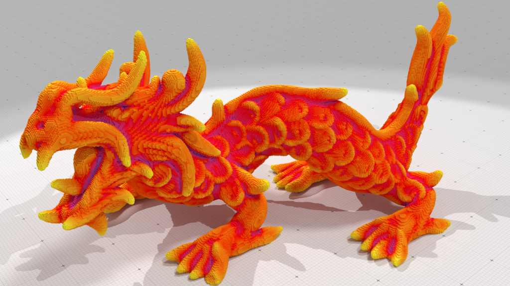
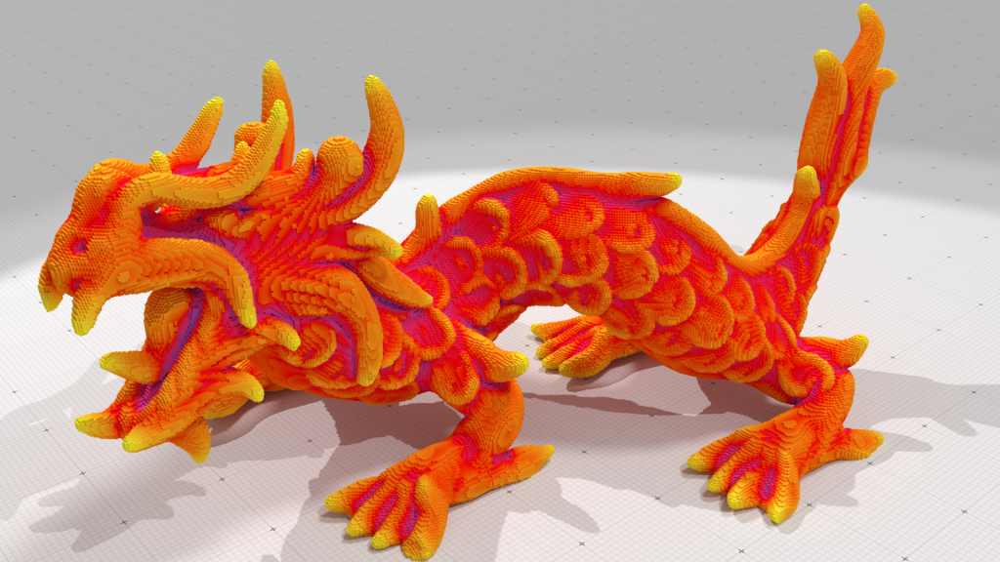

Principles
Objectives: share state-of-the-art and cutting-edge algorithms from digital geometry community.
- easy comparisons with the state-of-the-art
- allows new-comers in the field to get started
- fast prototyping of specific softwares (material sciences, medical imaging)
- provides nice illustrations/outputs of data structures and algorithms
The Project
- C++, cross-platform (linux,mac,win)
- open-source (LGPL)
- user-oriented and technical documentation, tutorials
- can be part of image processing pipeline (e.g. itk.org)
Support from:
DGtalTools and DGtalTools-contrib
Objectives: provide GUI and commandline tools for digital geometry processing
E.g.:
- file format converters, multigrid shape generators...
- visualization, digital surface extraction...
- differential estimators, topological invariant extraction...
- volumetric tools, homotopic thinning...
- ...
http://github.com/DGtal-team/DGtalTools
http://github.com/DGtal-team/DGtalTools-contrib
DGtal Packages
$$\tiny \mathbb{Z}^d $$  |
$$\tiny u_0+\frac{1}{u_1+\frac{1}{\ldots+\frac{1}{u_k}}} $$  |
   |
  |
|
| Kernel | Arithmetic | Geometry | Shapes | Topology |
|---|---|---|---|---|
 |
 |
 |
 |
|
| DEC | Graph | Mathematic | Image | IO |
Active community
Selected Features
Geometry processing
Fundamental objects
DSL, DSS, DCA, DPS (definition, recognition...)Contour and surface analysis
greedy decomposition, saturated segm. , curve simplification, differential estimators (length, area, normal vectors, curvature...)Volumetric analysis
metric definitions, DT, FMM, MA, VCM, thinning...Topology processing
"Ã la" Rosenfeld topology
adjacency relationships, Jordan pair, object boundary, simplicity testsCellular Khalimsky spaces
n-cells, cell incidence, digital surface tracking...Cubical complexes
iterators/circulators on cells, closure/star/link/collapse operators...DGtal / dgtal.org